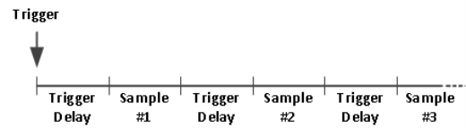
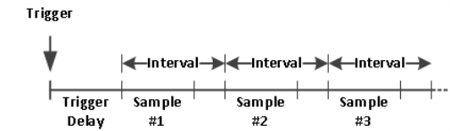

The trigger model and large reading memory on the Truevolt Series DMMs provide versatile capabilities for a wide variety of applications.
Acquiring measurements on the DMM is done as the result of triggering. This section describes how to configure triggering for the Continuous measurement mode. For the 34465A/70A, refer to Digitizing and Data Logging for information on triggering in those measurement modes.
For the 34460A/61A, pressing [Acquire] opens the following menu:
For the 34465A/70A, pressing [Acquire] opens the following menu:
Press Trigger Settings to open the following menu:
The menus above allow you to configure measurement triggering, and you can also use the VMC Out softkey to set the edge slope of the VM Comp (voltmeter complete) output on the instrument's rear panel. This connector issues a signal whenever the voltmeter finishes taking a measurement to allow you to signal other devices in a measurement system.
|
|
For accurate displayed statistics of AC measurements in Front Panel mode, the default manual trigger delay ([Acquire] > Delay Man) must be used. |
The (Trg Src) menu allows you to select one of these trigger sources:
Auto - the instrument continuously takes measurements, automatically issuing a new trigger as soon as a measurement is completed.
Single - the instrument issues one trigger each time the front panel [Single] key is pressed.
Ext - (Ext requires LAN option on 34460A) the instrument issues one trigger each time an edge of the appropriate slope arrives at the rear-panel Ext Trig connector. You can specify the slope on the softkey menu that appears when Trg Src is set to Ext.
Level - (34465A/70A with DIG option only) the instrument issues one trigger when the specified measurement threshold with the specified positive or negative slope occurs.
In the Single, Ext, and Level modes, you can specify the number of samples to be taken per trigger by using the Samples/Trigger softkey. The Single and Ext modes can both buffer up to one trigger, meaning that if you press [Single] or receive an external trigger while a series of measurements is in progress, the instrument will finish that series of measurements and then immediately launch a new series of measurements based on the trigger.
If multiple [Single] or external triggers are issued during a series of measurements, all triggers received after the first are discarded.
The [Acquire] menu also configures the delay that occurs before each measurement is taken, regardless of the trigger mode (Auto, Single, or Ext). This may be either automatic (the delay is based on the DMM’s settling time) or manual (you specify the delay time).
Finally, note the [Run/Stop] and [Single] keys on the front panel. In Auto trigger mode, pressing [Run/Stop] stops and resumes measurements, and pressing [Single] switches the instrument to single trigger mode. In the Single and Ext modes, pressing [Run/Stop] stops readings if they are in progress, or switches the mode to Auto if readings are stopped.
The instrument inserts a trigger delay between the occurrence of a trigger and the first measurement. When Auto is used (Delay Auto softkey), the instrument automatically determines the delay based on function, range and integration time. See Automatic Trigger Delays for further information. However, you may need to manually set a delay (Delay Man softkey) longer than the automatic delay to allow the input to settle before pacing a burst of measurements, for measurements with long cables, or for measurements of high capacitance or high impedance signals.
If you have configured the instrument for more than one sample per trigger (Samples/Trigger softkey), in all cases, the first sample is taken one trigger delay time after the trigger occurs. Beyond that, sample timing depends on whether you select immediate (Sample Immediate softkey , default) or timer (Sample Timer softkey) as described below.

In this configuration, the sample timing is not deterministic because the delay time is inserted after each sample completes. The actual time required to take each sample depends on the integration time and autoranging time.

In this configuration, the sample timing is deterministic because the start of each sample is determined by the specified sample interval (the trigger delay affects only the start of the first sample). Integration time and autoranging affect the sampling time for each sample, but not the sample interval. Periodic sampling continues until the sample count (set with the Samples/Trig softkey) is satisfied.
|
|
From the front panel, the instrument prevents you from specifying a sample timer that is shorter than the time required to make measurements based on the present function, range, and integration time. |
You can store up to 1,000 measurements in the reading memory of the 34460A, 10,000 measurements on the 34461A, 50,000 measurements on the 34465A/70A (without the MEM option), or 2,000,000 measurements on the 34465A/70A (with the MEM option). Readings are stored in a first-in, first-out (FIFO) buffer; when reading memory is full, the oldest readings are lost as newer readings are taken.
In Local (front panel) mode, the instrument collects readings, statistics, trend chart and histogram information in the background, so if you select any of those options, the data is ready for viewing. In Remote (SCPI) mode, the instrument does not collect this information by default.
Changing the instrument from Local to Remote does NOT clear any readings in memory. Changing the instrument from Remote to Local DOEs clear any readings in memory.
In general, you turn the reading of measurements on and off by pressing [Run/Stop], as described above. You can also take one reading or a specified number of readings by pressing [Single].
To save readings, press [Acquire] > Save Readings. Then use the menu that appears to configure the location where you want to save the readings:
See Utility Menu - Manage Files for details.
For the 34460A/61A only, press Save Readings to save the readings in memory to a file.
For the 34465A/70A only, press Options to configure reading storage options:

Rows/File - Specifies the maximum number of rows or readings to be written to a file.
Metadata - Enables reading number, time stamp of first reading, and sample interval (if available) in the file.
Separator - Specifies the character (Comma, Tab, or Semicolon) to use for separating the information on each row.
When finished configuring reading storage, press Done > Save Readings to save the readings in memory to a file.
The following actions clear reading memory:
These actions do not clear reading memory: